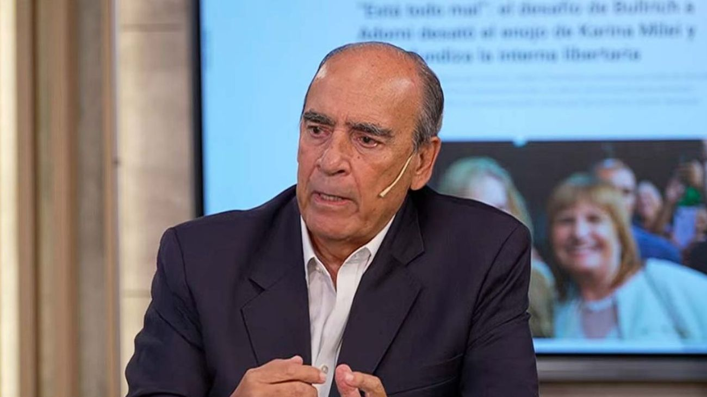

Guillermo Francos sale del directorio de YPF: un cambio que marca el fin de su ciclo en el gobierno
El exjefe de Gabinete que condujo las negociaciones legislativas más complejas de la gestión Milei será removido de la petrolera estatal, consolidando su alejamiento del núcleo del poder.

Guillermo Francos dejará de integrar el directorio de YPF, la empresa petrolera de mayoría estatal que cotiza en la Bolsa de Nueva York y es uno de los activos más estratégicos del Estado argentino. La salida de Francos del directorio representa el último capítulo de su progresivo alejamiento del centro del poder ejecutivo, luego de que el año pasado abandonara el cargo de jefe de Gabinete —que había ocupado durante los primeros meses de la gestión de Milei— en medio de un reordenamiento interno del gobierno que terminó con la llegada de Manuel Adorni a esa posición.
Francos fue una figura clave en la primera etapa de la administración libertaria. Como jefe de Gabinete, condujo las negociaciones con los bloques legislativos que permitieron aprobar la Ley Bases y el paquete fiscal, dos de los mayores logros parlamentarios del gobierno en su primer año. Su perfil dialoguista y su experiencia en la política bonaerense le permitieron tender puentes con sectores del PRO y de la UCR que el gobierno necesitaba para avanzar en el Congreso sin mayoría propia. Cuando dejó la jefatura de Gabinete, su incorporación al directorio de YPF fue interpretada como una forma de mantenerlo dentro del espacio de poder mientras se procesaba la transición, algo habitual en la política argentina cuando un funcionario de peso sale de un cargo ejecutivo.
Su salida del directorio de YPF cierra ese ciclo de manera definitiva. La empresa, que atraviesa una etapa de expansión en Vaca Muerta y negocia proyectos de GNL de escala histórica, requiere un directorio alineado con la conducción actual del gobierno y con la visión estratégica del equipo económico. Los cambios en el directorio de YPF suelen responder tanto a criterios de gestión como a señales de poder interno: quién está adentro y quién no define en parte los equilibrios dentro del oficialismo y entre el gobierno y los sectores privados que rodean a la petrolera.
El reemplazo de Francos en el directorio aún no fue confirmado oficialmente, y el proceso de designación del nuevo director deberá cumplir con los requisitos de transparencia que exigen las bolsas donde cotiza la empresa, en particular la SEC de Estados Unidos. Para Francos, que construyó su carrera política en la provincia de Buenos Aires durante décadas, la salida del directorio de YPF marca el cierre de su participación en el gobierno de Milei y abre la pregunta sobre cuál será su rol en el escenario político de cara a las elecciones legislativas de 2027.